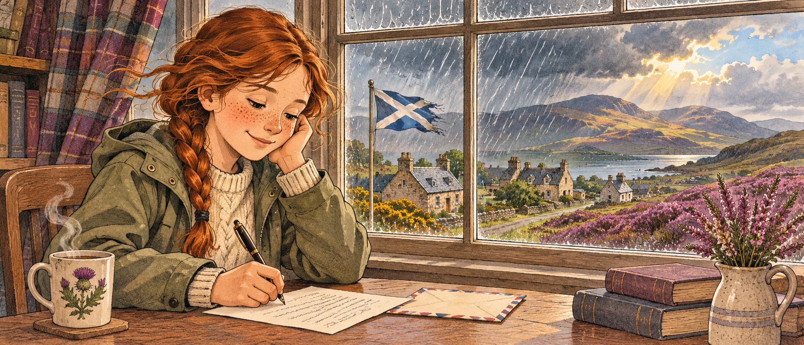

🌦️
🏙️
Lesson 03 · Weather, Climate & Cities · A2
Weather, Climate & CitiesAfanasyeva-6 Units 1+2 · Afanasyeva-5 Lesson 10 · 5 tense families · 6 cities + 6 regions · greenhouse effect
You already own Present Simple, Present Continuous and Present Perfect. Today we consolidate all three on weather, add four future forms, master the past pair (Past Simple + Past Continuous), used to for climate change, Present Perfect Continuous, 57 weather and climate words in five families, 5 temperature patterns, a Fine ↔ Nasty bucket game, five weather proverbs, the climates of six cities + six regions, a greenhouse-effect reading with four real climate-crazy cases, an ideal-day matcher, a clothes-per-weather drill and a 60-second boss challenge.
1
Warm-up · What's the weather like today?
4 min · listen · say · type · three weather sentences about today + 3 speaking prompts
Mini-theory · 1 min
Two question patterns to know by heart
What is the weather like today?— asks for a description. Answer: It is sunny and warm.What is the weather forecast for tomorrow?— asks about the future. Answer: It will rain in the afternoon.
Drill · listen · say · type (3 sentences)

Evgeniya at her window · Moscow · now
Speaking A · warm-up · 3 quick questions
Describe today in three sentences
What is the weather like right now?
What was the weather like yesterday?
What will the weather be like tomorrow?
1b
React like a native · "What a ___ day!"
5 min · 10 ready-made weather reactions · tap to hear · say OUT LOUD
Afanasyeva-6 · Unit 1 · everyday dialogue openers
Two patterns do all the work
Pattern 1 · one-word reaction → What a nasty day! · What a beautiful morning!
Pattern 2 · stretched reaction → What terrible weather we're having! · Isn't it a lovely afternoon?
Real people never answer only "fine, thanks" — they react to the weather first.
☀️
What a lovely day!
какой чудесный день
🌤️
What a bright morning!
какое ясное утро
🌸
What beautiful weather!
какая прекрасная погода
😊
Isn't it a fine day?
правда, чудесный день
🌞
What a warm evening!
какой тёплый вечер
⛈️
What a nasty day!
какой противный день
🌧️
What terrible weather!
какая ужасная погода
🥶
What a cold morning!
какое холодное утро
🌫️
What a dull afternoon!
какой хмурый день
💨
What a windy night!
какая ветреная ночь
Role-play · Katie opens with the weather · you react
Katie
Hi Evgeniya, isn't it a beautiful morning today?
Evgeniya
Oh yes, what a lovely sunny day! (your turn)
Katie
What terrible weather we're having! It has rained since Monday.
Evgeniya
I know, what a nasty week! (your turn)
2
Vocab · 42 weather & climate words in 5 groups
18 min · flip the card · hear the word · see an example sentence
Afanasyeva-6 · Unit 1 (Weather) + Unit 2 (Climate)
Five word-families
A — weather right now (adjectives) · B — climate of a place (longer-term adjectives) · C — weather phenomena (nouns) · D — weather verbs · E — temperature.
Rule of thumb: weather = what the sky looks like today / right now. Climate = typical weather over many years in a place.
🌈A · Weather right now · adjectives11 words
☀️
sunnyсолнечный
It's sunny and warm — a perfect day for a walk.
flip☁️
cloudyоблачный
The sky is cloudy; the sun will not come out today.
flip🌧️
rainyдождливый
It has been rainy all week in Scotland.
flip❄️
snowyснежный
January in Moscow is usually snowy and very cold.
flip💨
windyветреный
It's too windy to open my umbrella.
flip🌫️
foggyтуманный
The morning was foggy and I could not see the river.
flip🥶
frostyморозный
A thick frost covered the garden — the grass was white.
flip⛈️
stormyштормовой
The sea is stormy today — no boats will go out.
flip🌑
dullпасмурный, хмурый
November is grey and dull — no colours anywhere.
flip🌞
brightясный, яркий
The afternoon was bright and clear after the morning rain.
flip🔭
clearясный, безоблачный
The night is clear — you can see every star in the sky.
flip🌻
pleasantприятный
We had a pleasant walk in the park — plus eighteen and no wind.
flip🗺️B · Climate of a place · adjectives10 words
🔥
hotжаркий
Summer in Moscow is often hot — plus thirty is normal.
flip🧣
coldхолодный
December is cold; the temperature drops below zero every day.
flip🌡️
warmтёплый
May is pleasantly warm — about plus eighteen.
flip🍃
coolпрохладный
September evenings are already cool — I take a jacket.
flip🏜️
dryсухой
The desert climate is very dry — rain almost never falls.
flip💧
wetсырой, влажный
The British climate is wet; it rains in every month.
flip🔄
changeableпеременчивый
The Moscow climate is changeable — weather can shift four times a day.
flip🧊
severeсуровый
The Siberian climate is severe — minus forty is not unusual in January.
flip🌸
mildмягкий
The south of England has a mild climate — winters are rarely below zero.
flip🌍
continentalконтинентальный
Russia has a continental climate — hot summers and cold winters.
flip
Storm, rain, wind — Group C in one picture
🌪️C · Weather phenomena · nouns11 words
☔
rainдождь
Heavy rain started in the afternoon and did not stop.
flip⛄
snowснег
Fresh snow covers the park this morning.
flip🌬️
windветер
A strong wind is blowing from the north.
flip🌫️
fogтуман
Dense fog delayed all morning flights at the airport.
flip🧊
frostмороз, иней
The first frost of autumn arrived last night.
flip☁️
cloudоблако
Dark clouds mean rain is on the way.
flip🌦️
showerкратковременный дождь
Expect light showers in the afternoon.
flip⛈️
stormбуря, гроза
The storm brought down three big trees in our street.
flip⚡
lightningмолния
A flash of lightning lit up the whole sky.
flip🥁
thunderгром
The sound of thunder scared the dog.
flip🌈
rainbowрадуга
After the shower a beautiful rainbow appeared over the hills.
flip📊
barometerбарометр
My grandfather's barometer is falling — a storm is on the way.
flip🎯D · Weather verbs8 words
🌧️
to rainидти (о дожде)
It is raining heavily — take your umbrella.
flip❄️
to snowидти (о снеге)
It has snowed every day this week.
flip💨
to blowдуть (о ветре)
The wind blows strongly in October.
flip🌞
to shineсветить (о солнце)
The sun shines all day in Sochi in July.
flip🧊
to freezeзамерзать
The river freezes every winter.
flip📉
to dropпадать (о температуре)
The temperature will drop to minus ten tonight.
flip😮💨
to breatheдышать
It is hard to breathe when the air is full of smoke.
flip📺
to forecastпредсказывать погоду
The BBC forecasts rain in the south for the whole weekend.
flip
Degrees · above zero · below zero
🌡️E · Temperature4 words
🔢
degreeградус
It is twenty degrees Celsius outside.
flip0️⃣
zeroноль
The temperature fell to zero overnight.
flip➕
above zeroвыше нуля
Today is five degrees above zero — a mild winter day.
flip➖
below zeroниже нуля
It is twelve degrees below zero in Yakutsk this morning.
flip🌍F · Climate change & ecology5 words
🏭
factoryзавод, фабрика
Big factories release smoke that pollutes the air.
flip💥
harmвред
Smoke from cars does great harm to the forests near the city.
flip🛡️
to protectзащищать
We must protect the forests and the clean rivers for the next generation.
flip🌡️
greenhouse effectпарниковый эффект
The greenhouse effect makes the whole planet warmer, year after year.
flip☠️
pollutionзагрязнение
Air pollution in big cities can make it hard to breathe.
flip2b
Game · Fine ↔ Nasty · sort 18 weather words
6 min · tap each chip once to send it to ☀️ Fine · tap twice for ⛈️ Nasty · tap three times to clear
Afanasyeva-6 · Unit 2 · "Put the following words in two groups"
One tap = Fine · two taps = Nasty · three taps = reset
Every English person uses weather words on a two-point scale: fine (I like it) vs nasty (I don't). Mastering this split is the first step to small-talk about weather.
☀️ FINE weather
⛈️ NASTY weather
Tap each chip · aim for all 18 correct
0 / 18
Teacher note · 3 tricky ones
mild → almost always fine (a mild winter is soft and warm). cool → fine for summer, nasty for winter (default: fine). changeable → nasty because you can't plan.
2c
Five ways to say a temperature in English
8 min · 5 patterns · 10-question build-the-sentence drill
Afanasyeva-6 · Unit 1 · "It is ten degrees above zero"
One number → five English sentences
Russian uses one pattern: "сейчас минус десять". English uses five, and good speakers switch between them. Learn all five — pick the one that sounds best in the moment.
+28°
+18°
+5°
0°
−5°
−10°
−20°
Pattern 1 · ABOVE ZERO
It is ten degrees above zero.
Use when the number is
+1 to +40. Say above zero with any positive number.Pattern 2 · BELOW ZERO
It is ten degrees below zero.
Use when the number is
−1 to −40. Neutral, works everywhere.Pattern 3 · MINUS N
It is minus ten this morning.
Shortest. Common on the radio and in weather apps.
plus ten works too for positive numbers.Pattern 4 · ZERO (DEGREES)
It is zero degrees outside.
Exactly for 0°C. Water freezes at zero degrees.
Pattern 5 · DEGREES OF FROST
It is ten degrees of frost.
British, older-school. Only for sub-zero temperatures. Ten degrees of frost = minus ten.
Drill · build the sentence (10 questions)
1. +15°C · pattern "above zero". It is ___ degrees above zero.
2. −8°C · pattern "below zero". It is eight degrees ___ zero.
3. −12°C · pattern "minus N". It is ___ twelve this morning.
4. 0°C · pattern "zero". It is zero ___ outside.
5. −5°C · pattern "of frost". It is five degrees of ___.
6. +22°C in Sochi · say two ways. It is twenty-two degrees ___.
7. −20°C in Yakutsk. Choose the British folk pattern.
8. 0°C at night. The water froze. The temperature dropped to ___.
9. −3°C on the thermometer. Choose the shortest everyday reading.
10. +30°C in Moscow in July. Fill in: It is plus ___ in Moscow today.
0 / 10
3
Grammar A · Three present tenses on weather
14 min · theory recap · 12 drill questions on choosing the right tense
Theory · recap of what you already know
Which present tense for which weather sentence?
Present Simple — climate, repeated weather, a fact. Signals: usually, often, always, every winter, in July. · It snows in Moscow every January.
Present Continuous — weather happening right now. Signals: now, at the moment, look!, listen! · Look — it is raining!
Present Perfect — in a period that still continues (today, this week) or a visible result. Signals: today, this week, this month, already, yet, ever, never. · It has rained every day this week.
Three present tenses · one weather picture
Drill · choose the correct tense (12 questions)
1. Moscow ___ a long cold winter every year.
2. Look out of the window — it ___ heavily!
3. It ___ three times this week. I am tired of the rain.
4. The sun ___ every morning in July.
5. Listen! The wind ___ from the north-west.
6. The temperature ___ to minus ten overnight. The road is icy.
7. ___ you ever ___ snow in July?
8. In Siberia it ___ very cold almost all year round.
9. The sky ___ cloudy, but I think the sun will come out soon.
10. The British climate ___ wet — it rains in every month.
11. Katie ___ her coat because it has become very warm.
12. I ___ a warm hat today because it's only plus three outside.
0 / 12
4
Grammar B · Four ways to talk about the future
18 min · theory table · 16 drill questions on choosing the right future form
Theory · the full A2 future spectrum
English has four main ways to talk about the future
Each one answers a different question. The grammar is easy — the choice is the skill.
| Form | When to use | Signals | Weather example |
|---|---|---|---|
will + VI will go |
A spontaneous decision · a prediction without visible proof · a promise | I think… · maybe · probably · tomorrow |
It will rain tomorrow, I think. |
be going to + VI am going to go |
A plan already made · a prediction with evidence you can see | planned · decided · look at…! · I can see… |
Look at those black clouds — it is going to rain! |
Present ContinuousI am going |
An arrangement with another person · a fixed appointment | on Friday · at 7 p.m. · tomorrow + specific time/day |
I am meeting Katie at the airport on Saturday. |
Present SimpleI go |
A timetable · a schedule (trains, planes, lessons, cinema) | starts · leaves · opens · fixed times |
The plane to London takes off at 06:45 tomorrow. |
Looking ahead · tomorrow's weather
Drill · choose the correct future form (16 questions)
1. Look at those dark clouds! It ___ in a minute.
2. The forecast says it ___ very cold tomorrow.
3. I ___ Katie at the airport on Saturday at 10 a.m.
4. The plane from Edinburgh ___ at seventeen fifty.
5. I promise I ___ you a postcard from Sochi.
6. Watch out — you ___ the vase!
7. We ___ our summer holidays in London this year — tickets are already booked.
8. The weather in Sochi ___ hot in August — around plus thirty every day.
9. — I'm cold. — I ___ the window right now.
10. Hurry up! The train to St Petersburg ___ at seven sharp.
11. I ___ my grandmother in Yaroslavl next weekend. We booked the tickets yesterday.
12. I think the temperature ___ to minus twenty by the end of the week.
13. Oh no, I forgot my umbrella! I ___ completely wet.
14. The weather forecast ___ on Channel One at nine every evening.
15. We ___ have a barbecue next Sunday — everyone's already invited.
16. If you are late, I ___ in the café on the corner.
0 / 16
4b
Flip Cards · 10 personal future questions
10 min · click the card · answer OUT LOUD · flip to check which future form fits
All 4 future forms applied to your own life
Rule · match the form to the situation
- Plan already made · evidence I can see →
be going to - Arrangement with another person →
Present Continuous - Timetable, schedule →
Present Simple - Spontaneous promise · prediction →
will
Say a full sentence, then flip the card to see a sample answer and the target form.

🌳 What are you going to do next summer?
be going to · plan
flip
Sample answer · adapt to your own plan
"I am going to visit my grandmother in Yaroslavl and I am going to read at least five books."
Form · am / is / are + going to + base verb

☔ What will you wear tomorrow if it rains?
will · prediction
flip
Sample answer
"If it rains, I will wear my waterproof jacket and my boots. I will take an umbrella too."
Form · will + base verb (no -s, no to)
👋 Who are you meeting this weekend?
Present Continuous · arrangement
flip
Sample answer
"I am meeting my best friend Dasha at the cinema on Saturday at five o'clock."
Form · am / is / are + verb-ing · with a specific time or day
⏰ What time does your next English lesson start?
Present Simple · timetable
flip
Sample answer
"My next English lesson starts on Monday at three o'clock. It finishes at half past four."
Form · base verb + -s (he / she / it) · for timetables

🌦️ What will the weather be like in Moscow next week, do you think?
will · prediction
flip
Sample answer
"I think it will be cold and probably snowy. The temperature will drop to about minus ten by Friday."
Form · will + base verb · opinion about the future

🎄 Where are you spending New Year this year?
Present Continuous · arrangement
flip
Sample answer
"I am spending New Year at home with my family. We are cooking olivier salad and watching the TV address."
Form · am / is / are + verb-ing · already arranged

🌧️ What are you going to do if the weather is bad on Saturday?
be going to · plan
flip
Sample answer
"If it is cold and rainy, I am going to stay at home, bake cookies and finish my book."
Form · am / is / are + going to + base verb
📅 When does your winter holiday start this year?
Present Simple · timetable
flip
Sample answer
"My winter holiday starts on the 29th of December and finishes on the 8th of January."
Form · base verb + -s · for fixed schedules
🎁 What will you give your best friend for a birthday?
will · decision now
flip
Sample answer
"I think I will give her a book about horses and I will bake her a chocolate cake."
Form · will + base verb · spontaneous decision or opinion
🏙️ Which city on our list are you visiting first — London, Sochi, or Sydney? Tickets already booked!
Present Continuous · arrangement
flip
Sample answer
"I am visiting Sochi in July. My parents are driving us there and we are staying for two weeks."
Form · am / is / are + verb-ing · tickets already booked = arrangement
4c
Grammar C · Past Simple + Past Continuous on weather
12 min · theory · 12 narrative drill questions · narrator pair
New grammar · the narrative pair · Afanasyeva-6 Unit 1
Two pasts work as a team — one finishes, one still runs
Past Simple — a finished action. The whole weather event. Signals: yesterday, last week, in 1972, at 5 o'clock. · Yesterday it snowed all day.
Past Continuous — action in progress at a moment. Weather as the background to a scene. Signals: at 5 p.m., when I woke up, while…, all morning. · At 5 p.m. yesterday it was snowing heavily.
The classic pair — short event cuts through long event. · While I was walking home, it started to rain.
⏳ long action (Past Continuous)
⚡
🎯 short action cuts in (Past Simple)
I was walking home when…
…a thunderstorm started.
The sun was shining brightly when…
…dark clouds suddenly appeared.
We were having a picnic when…
…rain ruined everything.
Drill · choose Past Simple or Past Continuous (12 questions)
1. At 5 p.m. yesterday it ___ heavily all over Moscow.
2. When I woke up, the sun ___ brightly.
3. A strong wind ___ when she left the house at seven.
4. Last August it ___ almost every day in Edinburgh.
5. While we ___ on the beach in Sochi, a thunderstorm started.
6. In July 2010 it ___ so hot in Moscow that the forests near the city burned for three weeks.
7. As I ___ through the park, a rainbow appeared over the lake.
8. The temperature ___ to minus twenty-eight on 7 January 1987 — a Moscow record.
9. In Venice in 2003, snow ___ on the gondolas for the first time in fifty years.
10. While the kids ___ a snowman, their mum was making hot chocolate.
11. — What ___ you ___ at 10 a.m. yesterday? — I ___ my dog in the park.
12. The sky ___ completely clear and we ___ every star.
0 / 12
4d
Grammar D · used to for climate change
10 min · theory · timeline game · 8-question THEN vs NOW drill
New grammar · the perfect tool for "it used to be different"
One form for everything that was true then, isn't true now
used to + base verb — a past state or habit that has stopped. · Winters in Moscow used to be colder. (They aren't any more.)
Form — used to is the same for all persons. Negative: didn't use to. Question: Did it use to…?
Key signal word — the implied contrast with now or any more.
📜 1960 · THEN
→
🌡️ 2026 · NOW
Moscow used to have very cold winters — minus 20 was normal.
Now winters are milder — minus 5 is more common.
Rivers used to freeze solid every November.
Now they often don't freeze until January.
Summers used to be short and mild.
Now heatwaves of plus 35 happen every few years.
Snow used to fall in October.
Now the first snow often waits until December.
Drill · fill in used to or Present Simple (8 questions)
1. When my grandmother was a girl, winters ___ much colder in Moscow.
2. Nowadays we ___ heatwaves of plus thirty-five every few summers.
3. The Moscow river ___ in November, but now it waits until January.
4. In the 1960s snow ___ to fall in October. Now it often waits.
5. ___ it ___ to snow more in Russia fifty years ago?
6. London ___ a famous thick fog ("pea-souper") in the 19th century — it is rare now.
7. People ___ to think the climate was always the same. Now scientists know it changes.
8. Edinburgh ___ a lot of rainy days; in that it has not changed at all.
0 / 8
4e
Grammar E · Present Perfect Continuous on weather
8 min · theory · 8-question drill · how long has it been raining?
Grammar level-up · one step above Present Perfect
The weather that is still going on
Present Perfect Continuous → have / has + been + V-ing. Use when a weather action started in the past and is still happening now.
Compare: · It has rained every day this week. (Perfect = fact: 7 rainy days.) · It has been raining since morning. (Continuous = still raining right now.)
Key signals · since + start point (since morning, since 2020) · for + duration (for three hours, for days) · all day, all week.
Drill · choose the right form (8 questions)
1. Look out of the window — it ___ since nine o'clock.
2. The wind ___ for three days now — I'm tired of it.
3. It ___ five times this month. That's a lot of snow.
4. The temperature ___ since Monday — it's now plus twelve lower than on Sunday.
5. How long ___ the sun ___ today? — Since about eleven o'clock.
6. It ___ already twice this evening — that's enough rain for one day.
7. We ___ snow ___ Christmas. The streets are all white now.
8. My father ___ the barometer ___ a week — a storm is coming.
0 / 8
5
Reading · A letter from Katie in Scotland
10 min · listen first · then read · 6 T/F/NS · 5 cloze gaps

Katie writing her letter · Scottish highlands
Dear Evgeniya,
I think it is always very hot in summer in Moscow. But in Scotland the summer is not hot. Today, for example, it is only sixteen degrees and quite windy. I'm wearing a sweater and a jacket, and I still feel a bit cold.
Last August I went to London and the weather there was much warmer — about twenty-six degrees every day, bright sunshine, no rain. I was really happy. I walked a lot and I visited six museums. Have you ever been to London in summer? I hope one day you will come.
The autumn in Scotland is beautiful too, but it rains a lot. Yesterday morning it was cold and foggy, and in the afternoon the sun came out for about an hour. Then the wind started blowing and it began to rain again. That is a typical Scottish day.
What is the weather like in Moscow now? Write back soon.
Love, Katie.
Comprehension · True / False / Not Stated
1. Today in Scotland it is more than twenty degrees.
2. Katie is wearing warm clothes today.
3. Last August the weather in London was dry and sunny.
4. Katie travelled to London by plane.
5. Scottish autumn is rainy, according to Katie.
6. Yesterday the weather in Scotland was the same the whole day.
Cloze · fill the gap from the letter
1. Today it is only ___ degrees and quite windy.
2. In August in London the weather was about ___ degrees every day.
3. Katie visited ___ museums in London.
4. Yesterday morning it was cold and ___.
5. In the afternoon the sun came out for about an ___.
0 / 11
5b
Reading B · Our climate is going crazy · 4 real cases
12 min · read 4 short stories · learn the greenhouse-effect vocab · 8 T/F/NS + 5 cloze
Snow on gondolas · Venice 2003 · one of four "climate gone crazy" cases
Afanasyeva-6 · Unit 2 · "Climatic changes" · Afanasyeva-5 · Lesson 10 "Earth in Danger"
Three words you need before you start
greenhouse effect — the way heat is trapped inside the Earth's atmosphere by gases from cars and factories. The Earth gets a little warmer every year.
heatwave — many days in a row with very high temperatures; drought — a long period without rain; flood — too much water on the land.
Rule — weather changes day by day; climate changes over decades. When people say "the climate is going crazy", they mean strange weather events that shouldn't happen are happening more and more often.
CLIMATE GONE CRAZY — FOUR STORIES FROM EUROPE
Case 1 · Moscow, summer 2010. For almost two months the air in Moscow was burning. The temperature stayed above plus thirty-five every day. Forests around the city were on fire; thick smoke covered the streets, and people found it hard to breathe. Many old people had to leave Moscow. Scientists say this heatwave used to be impossible — now it happens every ten or fifteen years.
Case 2 · Venice, Italy, December 2003. For the first time in fifty years, snow fell on the famous gondolas of Venice. Tourists took photos — it looked like a fairy tale. But local people were worried: Venice is a warm city, snow should not fall there. The sea water was unusually cold, and many old buildings suffered from the ice.
Case 3 · France, summer 1983. A long drought killed millions of hectares of forest. The rivers almost dried up and farmers lost their crops. Even in Paris the grass in the parks turned yellow. France had never seen such a dry summer before.
Case 4 · Europe-wide storms, 1990 and 2003. Terrible storms damaged thousands of homes in 1990; in 2003 the same thing happened again. Scientists link these storms to the warming of the Atlantic Ocean. "The climate is not what it used to be," one weather forecaster said.
What can we do? Protect the forests, use less energy, pollute the air less. The planet is in our hands.
Comprehension · True / False / Not Stated · 8 questions
1. The Moscow heatwave in 2010 lasted almost two months.
2. During the Moscow heatwave, the air was full of smoke from forest fires.
3. Hundreds of children were hospitalised during the Moscow heatwave.
4. The snow in Venice in 2003 was the first in fifty years.
5. The local people in Venice loved the snow and were very happy about it.
6. The 1983 drought in France destroyed huge areas of forest.
7. The French government paid farmers for lost crops in 1983.
8. Scientists connect the big 2003 European storms to the warmer Atlantic Ocean.
Cloze · fill the greenhouse-effect gap
1. Factories and cars release gases that trap heat — this is called the ___ effect.
2. A long period without rain is called a ___.
3. Many days in a row with very high temperatures = a ___.
4. Too much water on the land after very heavy rain is a ___.
5. "We must ___ the forests and use less energy." (verb)
0 / 13
OGE-style speaking · 1-minute monologue
Pick one of the four cases and tell it back in 60 seconds
Use used to, Past Simple, Past Continuous and at least two new words (greenhouse effect, heatwave, drought, flood, pollute, protect).
6
Listening · BBC weather forecast
8 min · one listen without text · then fill 8 gaps while listening again
Afanasyeva-6 · Unit 1 · BBC weather forecast model
Strategy · predict the type of gap
Before you press play, read every sentence and guess: is the gap a number, a weather adjective, a place name, or a part of the day? Prediction halves your work.

BBC weather presenter · map of the UK
1. In London the day will start ___ with light rain in the morning.
2. The temperature in London will reach ___ degrees in the afternoon.
3. In the north of Scotland, expect strong wind and heavy ___ all day.
4. The temperature in Scotland is around ___ degrees.
5. In Wales, the morning will be ___.
6. Tonight the temperature in most of the country will drop to about ___ degrees.
7. A thick ___ is possible in the countryside overnight.
8. Friday will be mostly sunny, dry, and warmer, with temperatures up to ___ degrees in the south.
0 / 8
7
Dialogue · Evgeniya & Katie on the phone
6 min · listen · read · then fill 5 gaps

Evgeniya in Moscow · Katie in Scotland · one rainbow, two cities
Katie
Hi Evgeniya! How is the weather in Moscow today?
Evgeniya
Hi Katie! It's really cold today. The temperature is minus five, and it's snowing hard.
Katie
Minus five? Wow. Is it windy as well?
Evgeniya
A little. The wind is blowing from the north, but not very strong. What about Scotland?
Katie
Here it's plus seven and raining. It has rained every day this week!
Katie
Have you been outside today?
Evgeniya
Yes, I have. I walked my dog this morning. I got completely wet.
Katie
In Moscow I love winter because the snow is so bright. The streets look like a fairy tale.
Evgeniya
That sounds beautiful. Send me a photo!
Katie
OK, I will. Have a warm evening, Evgeniya!
Cloze · fill the gap from the dialogue
1. The temperature in Moscow is minus ___.
2. The wind is blowing from the ___.
3. In Scotland it has rained every day ___ week.
4. Evgeniya got completely ___ walking the dog.
5. Katie says the Moscow streets look like a fairy ___.
0 / 5
7b
Weather proverbs · how sailors read the sky
6 min · tap each card to reveal the meaning · match 5 proverbs to 5 meanings
Afanasyeva-6 · Unit 1 · "Rainbow at night sailor's delight"
Before weather apps, there were rhymes
English sailors and farmers have been reading the sky for 500 years. The rhymes they invented are still true — and still used today in English small-talk. Tap a card to reveal what it really means.
🌈
"Rainbow at night, sailor's delight.
Rainbow at morning, sailor take warning."
Rainbow at morning, sailor take warning."
Meaning: an evening rainbow = good weather is coming; a morning rainbow = a storm is on the way. English weather moves from west to east, and evening rainbows show the rain is behind you.
tap to reveal
🟥
"Red sky at night, sailor's delight.
Red sky at morning, sailor take warning."
Red sky at morning, sailor take warning."
Meaning: same logic — a red evening sky means dry air is to the west and good weather is coming; a red morning sky means the dry air has passed and rain is on its way. BBC meteorologists still quote this rhyme.
tap to reveal
🐝
"If bees stay at home,
rain will soon come.
If they fly away,
fine will be the day."
rain will soon come.
If they fly away,
fine will be the day."
Meaning: bees really do sense changes in air pressure. If you see bees hiding in the hive, expect rain within hours. If they are flying freely, the weather will stay dry. Farmers rely on this.
tap to reveal
🌳
"When the days begin to lengthen,
then the cold begins to strengthen."
then the cold begins to strengthen."
Meaning: the coldest weeks of the year come after the shortest day (21 December). January and February are usually colder than December, even though the days are already longer. True in Moscow too.
tap to reveal
🟨
"Evening red and morning grey,
are the signs of a bonny day."
are the signs of a bonny day."
Meaning: bonny = beautiful (Scottish English). A red evening plus a grey morning that lifts = a lovely dry day. Katie from our reading might say this.
tap to reveal
Match · each proverb to the weather it predicts (5 questions)
1. "Rainbow at morning, sailor take warning." → the weather will be…
2. "Red sky at night, sailor's delight." → tomorrow will probably be…
3. "If bees stay at home, rain will soon come." → bees in the hive = …
4. The coldest weeks of the Russian winter come in…
5. In the Scottish proverb, bonny means…
0 / 5
8
Cities · Compare the climate of six cities
10 min · read the six city cards · then answer 6 questions
Afanasyeva-6 · Unit 2 · "Climate of Moscow, London…"
How to talk about the climate of a city
Pattern: In [city] the climate is [adjective]. Summers are [adj], winters are [adj]. The temperature in [month] is usually about [number] degrees.

Six cities · six climates
🇷🇺Moscow
Continental · changeable
- Summer
- Hot, often plus twenty-five to thirty, sometimes thunderstorms
- Winter
- Cold and snowy, about minus ten; sometimes minus twenty-five
- Best for a visit
- Late May to early September
🇷🇺St Petersburg
Wet · cool · often cloudy
- Summer
- Cool, plus twenty on average, white nights in June
- Winter
- Grey, wet, about minus five, lots of dull days
- Best for a visit
- June (white nights) and late August
🇷🇺Sochi
Subtropical · mild · warm all year
- Summer
- Hot and humid, plus twenty-eight, sea is warm
- Winter
- Mild, above zero even in January, rarely snows
- Best for a visit
- June–September for the sea, March for flowers
🇬🇧London
Mild · changeable · wet
- Summer
- Warm and often sunny, plus twenty-two, occasional showers
- Winter
- Mild — plus five to plus ten — rarely snows
- Best for a visit
- May, June, and September
🏴Edinburgh
Wet · cool · very windy
- Summer
- Cool, plus sixteen, frequent light rain
- Winter
- Cold and windy, about plus three, sometimes snow
- Best for a visit
- August (Edinburgh Festival)
🇦🇺Sydney
Mild · sunny · opposite seasons!
- Summer (Dec–Feb)
- Hot, plus twenty-eight, perfect beach weather
- Winter (Jun–Aug)
- Mild, about plus seventeen, sunny most days
- Best for a visit
- October–April, when Russia has winter
Comprehension · 6 quick questions on the cards
1. Which of the six cities has the mildest winter?
2. Which city is the windiest?
3. In which city is the sea warm in summer?
4. Which city is famous for its "white nights" in June?
5. Which city has summer in December?
6. Which city has a continental climate?
0 / 6
8b
Zoom out · six regions on the planet
8 min · six region cards · think "whole area", not "one city" · 6 quick questions
Afanasyeva-6 · Unit 2 · "typical winter/summer weather in: your place, London, Florida, the North Pole, the Crimea, South America"
From city → to region
In section 8 you compared cities. Now zoom out and talk about regions — big pieces of the planet with their own climate pattern. Pattern: In [region] the climate is [adjective]. In [season] the typical temperature is [number] degrees.
🏠Your place · Moscow region
Temperate · continental · four real seasons
- Winter
- −10 °C average, snow from November to March, rivers freeze
- Summer
- +22 °C average, hot peaks of +30 °C, afternoon thunderstorms
- Problem
- Heatwaves in July are getting more common every decade
🇬🇧London / Southern England
Mild · wet · changeable · no real extremes
- Winter
- +5 °C average, rarely below zero, snow lasts half a day
- Summer
- +22 °C average, long twilights, showers every few days
- Problem
- Grey skies for weeks; locals talk about the weather constantly
🌴Florida · USA south-east
Subtropical · humid · hot all year
- Winter
- +20 °C, plenty of sunshine, almost never freezes
- Summer
- +32 °C, humid, afternoon storms almost every day
- Problem
- Hurricanes from June to November — strong wind and heavy rain
🧊The North Pole · Arctic
Polar · severe · frozen ocean
- Winter
- −30 °C average, polar night (sun does not rise)
- Summer
- 0 °C, polar day (sun does not set), ice begins to melt
- Problem
- Ice is shrinking fast because of the greenhouse effect
🍇The Crimea · Black Sea coast
Subtropical / Mediterranean · dry summers
- Winter
- +5 °C, mild, snow is rare on the coast
- Summer
- +28 °C, dry and sunny, perfect beach weather
- Problem
- Water shortages in late summer
🌵South America · Amazon & Patagonia
Tropical north · cool windy south · opposite seasons
- North (Amazon)
- +28 °C all year, very wet, rainforest climate
- South (Patagonia)
- +10 °C summer, strong wind all year
- Remember
- January is summer, July is winter — the hemispheres are flipped
Comprehension · 6 quick region questions
1. Which region has polar night (no sunrise for weeks) in winter?
2. Which region has hurricanes from June to November?
3. In which region is January summer?
4. Which region has a Mediterranean-style summer (hot & dry) and a mild winter?
5. In which region do locals "talk about the weather constantly" because it changes so often?
6. Which region's climate problem is "heatwaves in July are getting more common every decade"?
0 / 6
9
Speaking B · Climate of Moscow · four seasons
6 min · answer out loud · use the vocab from section 2
Moscow · four seasons · your monologue starter
Ready-frame · Afanasyeva-6 Unit 2
Describe the climate of one city
Three steps each time: season → typical weather → temperature.
Frame: In winter in Moscow it is usually ___ . The temperature is often about ___ degrees. It often ___ .
❄️ Describe winter in Moscow.
🌷 Describe spring in Moscow.
☀️ Describe summer in Moscow.
🍂 Describe autumn in Moscow.
❤️ Which season do you like best and why?
🔁 Compare Moscow and Scotland.
9b
Game · Describe the ideal day for 8 activities
8 min · tap each activity · say YOUR ideal weather for it · then reveal a sample answer
Afanasyeva-6 · Unit 2 · "Describe an ideal day for…"
Match activity ↔ weather
For each activity, decide: hot or cold? sunny or windy? wet or dry? Pattern: An ideal day for [activity] is [adjective] and [adjective], about [number] degrees. I would hate it if it [verb].
🧺
Picnicking in a park
Sample: An ideal picnic day is warm and sunny, about plus twenty-two. There is a light breeze and no rain clouds. I would hate it if it suddenly started to rain.
tap to reveal
🏛️
An excursion / city sight-seeing
Sample: An ideal sight-seeing day is mild and dry, about plus fifteen. Not too hot — because you walk a lot. Clouds are fine; what you need is comfortable temperature.
tap to reveal
🖼️
A visit to a museum
Sample: Museums are the perfect plan for a cold or rainy day. You don't want sunshine outside while you are inside — it feels like you're missing a better plan.
tap to reveal
🎄
Seeing the New Year in
Sample: A perfect New Year night is frosty and snowy, about minus seven. Light snow falling makes the fireworks look magical. Zero wind.
tap to reveal
⛸️
Skiing or ice-skating
Sample: An ideal ski day is cold and sunny, about minus five or minus ten. Fresh snow from last night and no wind. Below minus fifteen the face starts to freeze.
tap to reveal
🏀
Playing outdoors with friends
Sample: A perfect outdoor-play day is warm, dry and not too windy, about plus eighteen. Any season works if the weather is friendly.
tap to reveal
📚
Preparing for exams at home
Sample: For exam preparation I actually like a rainy, dull day. Grey weather helps me stay inside and focus. Sunshine is a distraction.
tap to reveal
⛵
A sea voyage / boat trip
Sample: An ideal sea voyage is clear, calm and warm — plus twenty-four, blue sky, almost no wind. Stormy weather at sea is dangerous and really unpleasant.
tap to reveal
Speaking · pick 3 activities · 30 seconds each
Which 3 ideal days do YOU want this week?
Say three full sentences out loud. Use would like and at least two adjectives per answer.
10
Speaking C · Plan a trip · use future tenses
8 min · for each prompt, give a 2-sentence answer out loud · use will, going to or Present Continuous
Where will you go next summer?
Mix the futures · 8 prompts
Which city will you visit next, and why?
Pattern: Next summer I am going to visit ___ because ___ . I will take ___ with me.
Which city on the list are you going to visit first, and why?
What will the weather be like there when you go?
What clothes are you going to pack?
Who are you meeting there?
What time does your plane take off?
What will you do if it rains the whole trip?
Which city would you never visit in winter, and why?
Promise yourself one thing you will do on this trip.
10b
Game · Dress for the weather · match 8 outfits
6 min · pick the right item for each weather situation · learn 8 British clothing words
Afanasyeva-6 · Unit 2 · "describe the clothes you prefer to wear in different weather"
Eight British-English clothing words you'll actually hear
In Britain weather is unpredictable — so clothes words are very precise. Learn these 8 and you'll never be lost in a British conversation about what to wear.
anorak— thick warm jacket with a hood, for very cold weatherraincoat / mackintosh / mac— long waterproof coat for rainwellies (wellington boots)— rubber boots for puddles and mudscarf— around the neck for winter warmthgloves · mittens— for freezing handssunhat / cap— to protect from the sunsunglasses— bright sun or sun on snowa woolly jumper— a warm thick sweater
🥶−25 °C in Yakutsk, strong wind
severe cold
🌧️+10 °C, heavy rain all day
wet
☀️+32 °C in Florida, sunny beach
very hot & sunny
⛄−5 °C, bright winter day, snow sparkles
snow + bright sun
🌫️+8 °C, foggy autumn morning, light drizzle
cool + wet
💨+12 °C, very windy, dry
windy, not raining
🌞+22 °C, pleasant warm spring day
pleasant, mild
🧊0 °C, slushy wet snow turning to ice
freezing wet
0 / 8
11
Speaking Boss · 60-second climate monologue
5 min · one try without pauses · hit every item on the checklist
60 seconds · one city · one chance
Final challenge · 1 try · 60 seconds
Describe the climate of your dream city in one minute
Pick any city (from section 8 or your own). Speak for a full 60 seconds without stopping. Use Present Simple for facts, Present Continuous for right now, will / going to for the future, and at least 8 words from section 2's vocab.
60
Hit every item · tick as you go
⭐
Bonus · Four seasons · Temperatures · ОГЭ FIPI mini-task
15 min · 4 season cards + 8-question temperature drill + ОГЭ-format mini reading
Moscow embankment · winter · spring · summer · autumn
Afanasyeva-6 · Unit 2 · "The four seasons"
Every climate conversation starts with the four seasons
Pattern: In [season] the weather in [place] is [adjective]. The temperature is usually about [number] degrees [above/below] zero.
❄️Winter · December–February
- Weather
- Cold, snowy, often frosty and dull
- Temperature
- −10 °C average, sometimes −25 °C (below zero)
- Daylight
- Short — the sun sets at 4 p.m.
🌷Spring · March–May
- Weather
- Changeable — snow turns to rain, trees blossom in May
- Temperature
- +2 °C in March → +18 °C in May (above zero)
- Daylight
- Grows fast; by May the sun is out until 9 p.m.
☀️Summer · June–August
- Weather
- Hot and often sunny, occasional thunderstorms
- Temperature
- +22 °C average, sometimes +30 °C
- Daylight
- Very long — bright evenings until 10 p.m.
🍂Autumn · September–November
- Weather
- Cool and wet; "golden autumn" in late September
- Temperature
- +15 °C in September → 0 °C in November
- Daylight
- Shrinks fast; by November the sun sets at 4:30 p.m.
Drill · temperatures · above / below zero (8 questions)
1. It is +18 °C in Sochi today. Write this in words:
2. The thermometer shows −12 °C in Moscow. In English:
3. Choose: It is -3 °C today. The temperature is ___ zero.
4. Choose: It is +22 °C in Sochi. The temperature is ___ zero.
5. When the water freezes, the temperature drops to ___.
6. The warmest month in Moscow is usually ___.
7. The coldest month in Moscow is usually ___.
8. In Yakutsk the temperature can drop to −50 °C. That is fifty degrees ___ zero.
0 / 8
ОГЭ format · True / False / Not Stated
ОГЭ FIPI format · Reading task · True / False / Not Stated
Read the two short texts and answer 6 questions · 7 min
Text A · Nastya from Novosibirsk. "The climate in my city is continental. Winters are very cold — the temperature often drops to minus thirty. We have snow from November to April, so I ski every weekend. Summer is short but hot — up to plus thirty. The best season for me is winter because I love ice skating with my friends on the frozen river."
Text B · Ben from Edinburgh. "Scottish weather is changeable. Even in summer I need a jacket, because the temperature rarely goes above plus twenty. It rains all year round — about two hundred days a year. In winter it is wet and windy, but it does not often snow in the city centre. I prefer our summer because the evenings are long and bright until ten o'clock."
1. Novosibirsk has a continental climate.
2. In Novosibirsk summer lasts six months.
3. Nastya likes ice skating on the river in winter.
4. Nastya has a brother who also skis every weekend.
5. In Edinburgh it rains about two hundred days a year.
6. Snow is common in Edinburgh city centre every winter.
0 / 6
ОГЭ FIPI format · Monologue · 2 min speaking (Task 3-style)
Prepare a 1.5-minute monologue · 4 bullet points
Talk about the climate of Russia. Cover every bullet:
- what the Russian climate is (continental / mild / severe?)
- typical weather in each of the four seasons
- temperature range (above / below zero) across the year
- which season you like best and why
You have 1.5 minutes to speak. Try to use at least 6 adjectives from section 2.

Evgeniya writing her weather diary · winter evening
12
Writing · Your weather diary · 80-120 words
10 min · one diary entry — mix all three present tenses + one future sentence
The whole point of this lesson in one paragraph
Use all three present tenses and at least one future form
- Present Simple — about November in Moscow generally:
November is usually cold and grey. - Present Continuous — about the weather right now:
Right now it is snowing lightly. - Present Perfect — about the last few days:
It has snowed every day this week. - Future — one
willorgoing tosentence:Tomorrow the temperature will drop to minus fifteen.
Your weather diary · today
13
Vocab recap · 20 fresh examples with today's words
6 min · same words · different sentences · translate silently in your head
20 words · 20 fresh sentences
sunny — The park is full of people on a sunny Saturday. солнечный
cloudy — Tomorrow will be cloudy but dry. облачный
rainy — I hate rainy mornings — my boots always get wet. дождливый
snowy — A snowy winter means great skiing in the countryside. снежный
windy — It was so windy that my hat flew off. ветреный
foggy — A foggy November morning hides the river from view. туманный
frosty — The frosty air stings your face a little. морозный
stormy — The sea has been stormy for three days. штормовой
dull — Another grey, dull Monday morning in London. пасмурный
bright — The afternoon became bright and clear after the shower. ясный
hot — Last August was unusually hot — plus thirty-five on some days. жаркий
cold — Keep warm! It's very cold outside today. холодный
warm — The sand is still warm from the sun. тёплый
cool — The forest feels pleasantly cool at midday. прохладный
dry — The Egyptian desert is extremely dry. сухой
wet — The streets are wet after yesterday's rain. сырой
changeable — British weather is famously changeable. переменчивый
severe — The Antarctic has a severe climate with permanent ice. суровый
mild — Sochi has a mild climate, so lemons and tea grow there. мягкий
continental — Russia's continental climate means hot summers and cold winters. континентальный
Source: Афанасьева О.В., Михеева И.В. · «Английский язык. VI класс» · 2012 · Unit 1 "Weather" (pp. 4–17) · Unit 2 "Climate" (pp. 18–34) + Afanasyeva V класс 2011 · Lesson 10 "The Earth Is in Danger" (pp. 140–150). Texts, dialogues, city & region cards adapted to current context; pre-recorded audio generated via edge-tts en-GB; all in-page clips use browser speech synthesis (en-GB).
Four tasks before next lesson
Homework · ~35 min · the lesson has grown · pick 5 of 8
Eight tasks — do any five that your teacher ticks
- Vocab — re-flip all 51 flashcards (Section 2). Write 12 new sentences using any 12 words: four from group C (phenomena), four from group D (verbs), four from the new group F (ecology).
- Fine ↔ Nasty — replay Section 2b until all 18 chips are correct in one go.
- 5 temperature patterns — rewrite 5 weather forecasts: write today's temperature in all five English patterns (above zero · below zero · minus · zero degrees · degrees of frost).
- Grammar A+B — redo the 12 present-tense + 16 future drills (Sections 3, 4) with 100% correct. Any wrong? Re-read the theory box.
- Grammar C+D+E — redo Past Simple/Continuous, used to, and Present Perfect Continuous drills (Sections 4c, 4d, 4e). Then write 3 of your own climate-change sentences using used to.
- Climate reading — re-read the 4 climate-crazy cases (Section 5b), then tell one case in your own words — 60 seconds, record as a voice memo.
- Proverbs — learn 2 of the 5 proverbs (Section 7b) by heart. Which one do you believe?
- Writing — copy your diary entry (Section 12) into a message and send it. Mix all three present tenses, Past Continuous, and one future form.
Boss bonus · record yourself doing the 60-second climate monologue (Section 11) and send the voice memo.
📝 Workbook · Grammar & Vocabulary Lab
Zhenya Levina · revision of L1–L8 (family, four present tenses, Present Perfect Continuous) + L9 deep dive on weather, climate, cities and used to.
Programme recap · L1–L9
- L1–L2 · 26 & 29 Oct: Halloween Monster Family, have got / has got, possession, family vocab.
- L3 · 2 Nov: My Family, Present Simple / Continuous, first look at Present Perfect.
- L4–L6 · 5, 9 & 12 Nov: Present Perfect / Present Perfect Continuous, My Family.
- L7 · 16 Nov: four present tenses, revision of PP / PPC and family.
- L8 · 19 Nov: Weather, Climate & Cities · four present tenses + four future forms on weather.
- L9 · 23 Nov: deeper weather · used to for climate change · Present Perfect Continuous · weather phenomena · ecology · clothes · 6 cities and regions.
Revision · L1–L8 · grammar & vocabulary
Short route · 25–35 minutes
One session — one goal. Pick either the revision route or L9. Do not try to finish the whole bank in one sitting.
- Recall · 3 min: say 5 words without a dictionary and build 2 sentences with them.
- Choose & explain · 5 min: the scenes below. If you hesitate, peek at the rule.
- Editor · 5 min: find the mistake and rewrite the sentence.
- Dictation · 7 min: listen → write → listen again → check.
- Speak out loud · 5–10 min: pick one oral prompt, answer without the prop, then improve.
1 · Choose the right form
Read the situation. Pick the answer, then name the word or detail that helped you decide.
Message in the family chat
Interview with a cousin
Finished work or process?
Whose room?
Tasting the soup
2 · Message editor
Each message has one target mistake. Rewrite the sentence correctly. Explain the fix aloud.
3 · Dictation · six family phrases
1. Listen once without writing. 2. Listen again and write it down. 3. Listen once more and check the endings, auxiliaries and apostrophes. Replay as many times as you need.
Phrase 1
Phrase 2
Phrase 3
Phrase 4
Phrase 5
Phrase 6
have got / has got · quick rule + 5 drill
Possession: I/you/we/they have got; he/she/it has got. Negative: haven't/hasn't got. Question: Have/Has + subject + got?
Possessive case · ʼs / sʼ
One owner: Wendyʼs cat. Irregular plural: childrenʼs toys. Regular plural already ending in -s: sistersʼ room (apostrophe after the -s).
Present Simple vs Present Continuous
Present Simple = habit, fact. Markers: usually, every day. Present Continuous = action now. Markers: now, Look!, Listen!
Present Perfect · have / has + V3
Experience, result or action in an unfinished period. Markers: already, just, yet, ever, never, for, since, lately, so far, this week.
Present Perfect Continuous · have / has been + V-ing
Process from a past point up to now. Markers: for + period, since + start, all morning, how long?
Family · 30 words · define each person
Read the definition and type the family word in English.
Irregular past participle (V3) · 20 key verbs for Present Perfect
Type the V3 — the form Present Perfect and PPC need after have / has (+ been).
Present Perfect signals · one word in each gap
Pick the right marker: already · yet · just · ever · never · for · since · lately · so far · this week.
State verbs · pick Simple or Perfect, not Continuous
These verbs don't take am ___ing or have been ___ing.
Rule · 15 top state verbs
know · believe · understand · think (= opinion) · love · like · want · need · remember · have (= own) · hear · see · seem · prefer · agree — use Present Simple or Present Perfect, not Continuous.
Oral practice · speak in full sentences
1. My family · have got & possession
60–90 seconds. Name at least six relatives, say who they are to you, describe two of them. Use have got / has got and three possessive forms: Wendyʼs, childrenʼs, sistersʼ.
2. Usually and right now · Present Simple / Continuous
Compare your family's usual evening with what each person is doing now. Six sentences: three with usually/every day, three with now. Then ask two questions.
3. Experience, result, process · Present Perfect / PPC
Give two experiences, two results, two long processes. Use ever/never, already/yet, for/since.
0 / 110
New & deep dive · L9 · 23 November 2026
Short route · 25–35 minutes
Weather vocab · 4 future forms · used to · PPC · exclamations · proverbs · cities.
- Warm up · 3 min: name 5 weather words and build 2 full sentences.
- Choose & explain · 5 min: the scenes below.
- Editor · 5 min: fix the weather messages.
- Practice drills: adjectives, climate, clothes, futures, exclamations, temperature, proverbs, cities.
- Speak out loud · 5–10 min: one oral prompt.
1 · Choose the right form · weather & future
Pick the best form for each situation.
Look at those clouds
A fixed arrangement
Then and now
Last few hours
Schedule
Spontaneous offer
2 · Weather message editor
Each sentence has one mistake. Rewrite correctly.
3 · Dictation · six weather phrases
Listen → write → check. Repeat as many times as you need.
Phrase 1
Phrase 2
Phrase 3
Phrase 4
Phrase 5
Phrase 6
Weather adjectives · 24 words
Describe the weather from the hint.
Climate & ecology · 10 words
Clothes for weather · 10 items
4 Future Forms · which one fits?
Pick will / going to / Present Continuous (arrangement) / Present Simple (schedule).
Weather exclamations · "What a ___ day!" / "Isn't it ___?"
Temperature · "plus / minus / above / below zero"
Weather proverbs · finish the second half
Cities & their climates · match hint to city
used to · for what has changed
used to + V — a past state or habit that has stopped. All persons same. Negative: didn't use to. Question: Did ___ use to?
Oral practice · weather & climate
1. Weather forecast presenter · 4 future forms
60–90 seconds. Give tomorrow's forecast. Use will, going to, Present Continuous (arrangement) and Present Simple (schedule) at least once each. Mention temperature and two weather words.
2. Then and now · used to + ecology
Compare the past and the present in your city. Say two sentences with used to, one with didn't use to, and ask one question with Did ___ use to? Use words like climate, pollution, freeze.
3. Weather talk · PPC + cities + proverbs
90 seconds. Pick two cities from the list. Compare their climate. Describe the last hours with PPC (It has been raining since…). Give a forecast and finish with one proverb.
0 / 90